Meridian interaction fixes
Evidence for the three reported defects, before and after, from the unified prototype at 1512×805 with real (space-taking) scrollbars. Frames are consecutive screen captures; the times are from the recording. Live: http://localhost:3100/prototypes/unified (reload the tab first).
1 · Page bouncing — cause and fix
- Navigation remounted content and animated it in from nothing. Switching view replaced the whole main area, then faded it in from opacity 0 while it rose 6px; switching request did the same to the request body (4px). The first frame after each click was blank, and persistent chrome (pane headers, search, filters) dropped and sprang back — the bounce.
- The sliding selection painted over the rows it crossed. The highlight lives in the newly selected row and travels from the old one; moving down, it was drawn on top of the rows in between, so the previous request’s title (and the “Inbox” label in the sidebar) disappeared for ~150ms.
- Opening a request from a table cross-faded two full pages. The table and the request were both semi-transparent and 40px apart for several frames.
- Not the cause (measured): no scroll restoration jumps, no focus scrolling (all focus calls use
preventScroll), no scrolling of hidden containers, no layout shifts, no long frames.
Fix: views, requests and request pages now swap in place in a single frame (the table stays mounted under an open request, so scroll and ticked rows survive). Selection highlights paint beneath row content. Lists scroll only themselves, below sticky headers. No delays were added. Measured afterwards in Chrome at 120Hz and on the production build: 0 empty or faded frames, header position constant, no frames over 40ms.
BeforeClicking the third request (1343 → 1447 → 1455 → 1488ms)
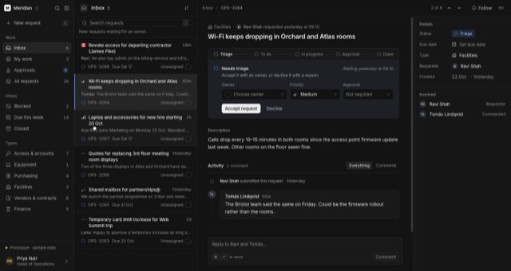
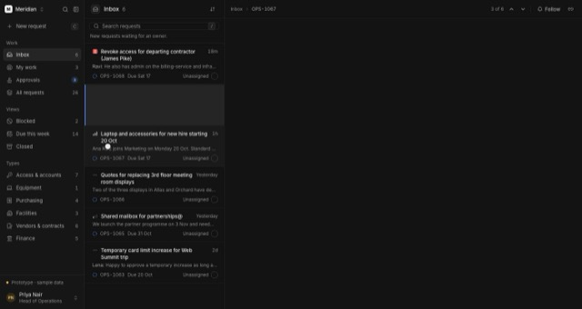
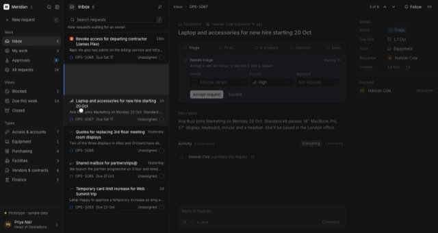
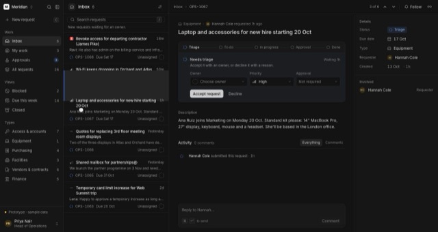
AfterSame click (1508 → 1624 → 1637 → 1655ms)

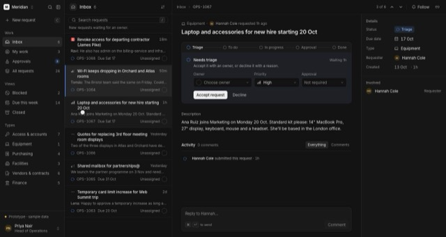
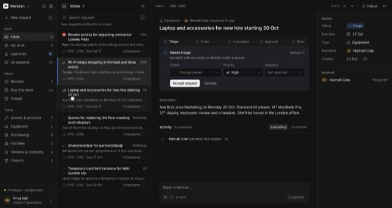
BeforeInbox → My work
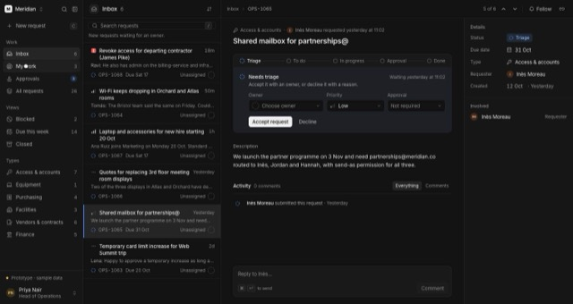
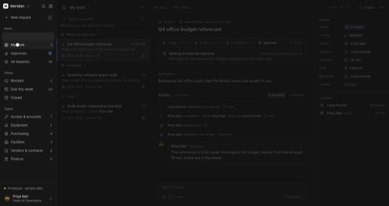
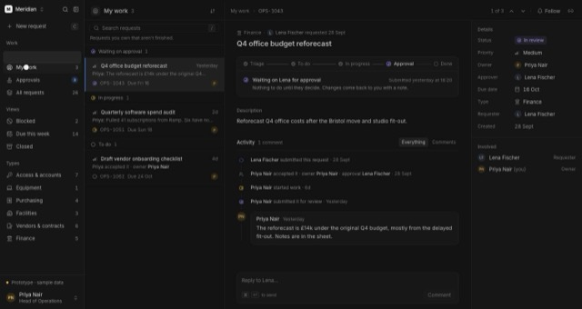
AfterInbox → My work
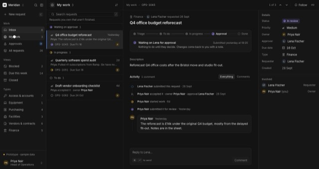
Before / AfterOpening a request from All requests
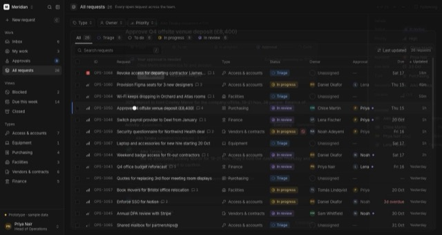
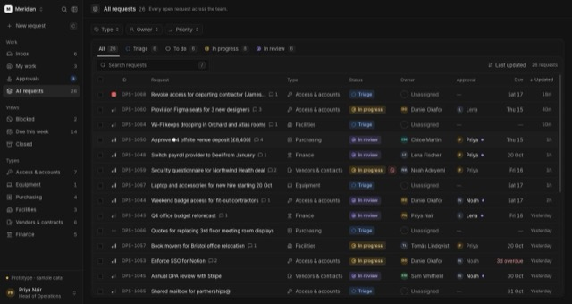
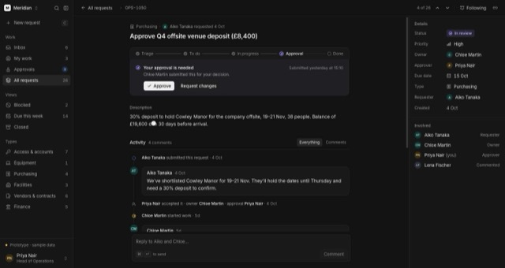
2 · Calendar
- Replaces the browser’s date picker in the request details and in New request. Same overlay surface, border, radius and shadow as Meridian’s other menus; 13px numerals, tabular.
- Selected date: the one accent fill. Today: accent numeral with a dot. Other months and unavailable days (before today, in New request) are dimmed. Six rows always, so the height never changes between months.
- Keyboard (WAI-ARIA date picker dialog): arrows by day/week · Home/End to week start/end · Page Up/Down by month, with Shift by year · Enter/Space chooses · Escape closes and returns to the field · Tab stays inside. Opens on the selected date, or today.
- Dates are plain
yyyy-mm-ddcomputed in UTC — checked across month ends, leap years, the UK clock changes and time zones from UTC−8 to UTC+14. - No dependency: none of the vetted libraries provides a calendar, and the hard parts (one layer at a time, dialogs, focus) are Meridian’s own popover layer.
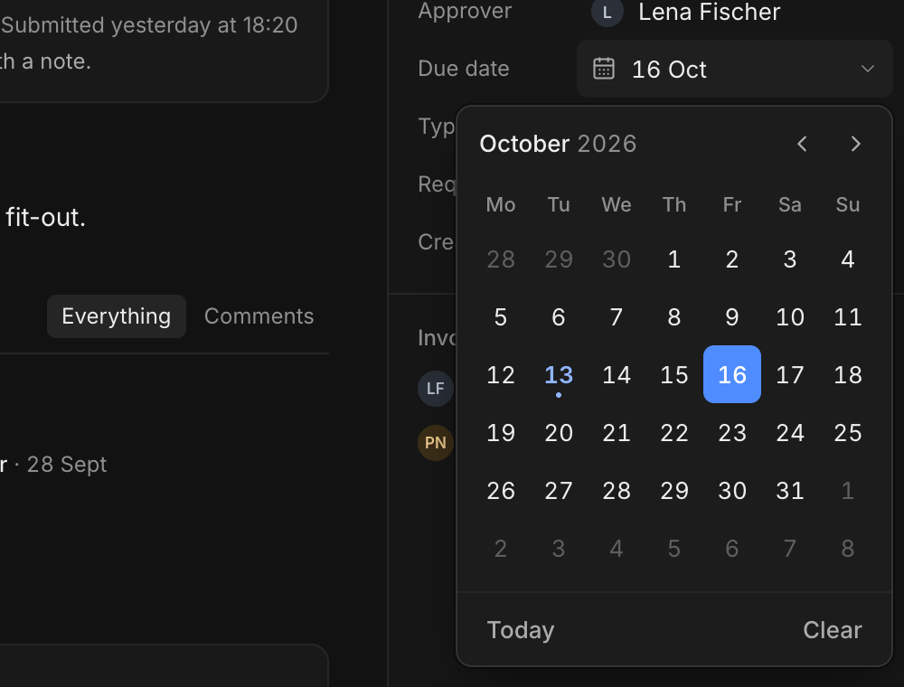
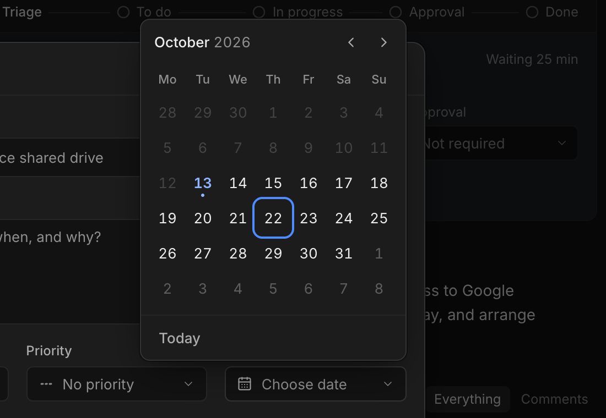
3 · Overlapping popovers
- Native calendar. The browser’s date popup lives outside the page: nothing in Meridian knew it was open, so it couldn’t be closed when another menu opened, ignored the app’s Escape handling, and always drew above everything — the calendar over the approver list.
- Menus inside New request opened behind the dialog (rendered under the browser’s top layer) and couldn’t be used.
- Shortcuts acted underneath an open menu: C opened New request over it, J changed the request beneath it, [ moved the layout so it detached from its field; the menu stayed open through all of them.
Fix: one popover layer for every picker, menu and the calendar. Opening one — by pointer or keyboard — or opening a dialog closes the previous one. Each renders in the browser’s top layer (inside the dialog when there is one), so nothing stacks or clips and no z-index is involved. Escape and choosing return focus to the field; clicking elsewhere closes it and leaves focus where you clicked; Tab from a list moves on from its field. Page shortcuts wait while a popover is open.
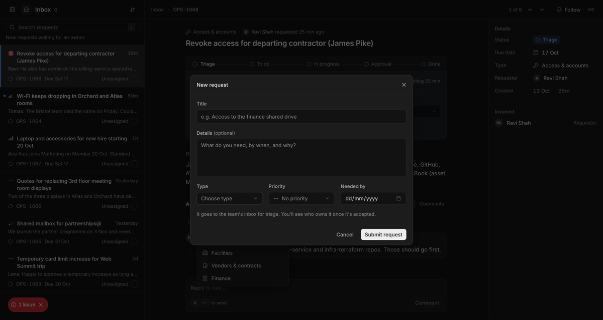
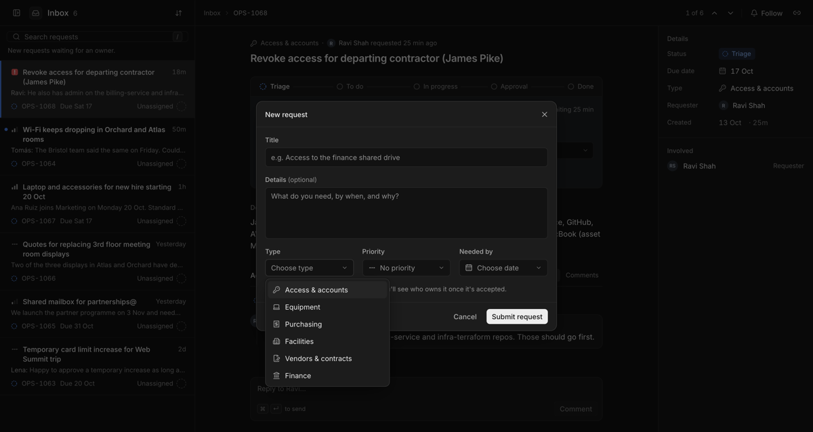
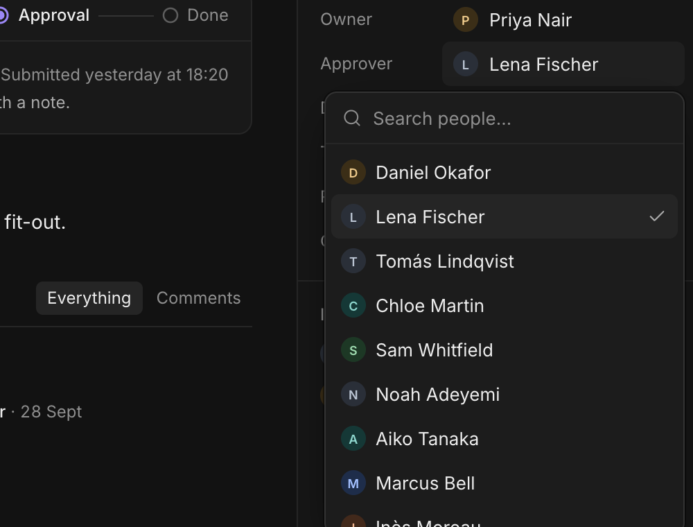